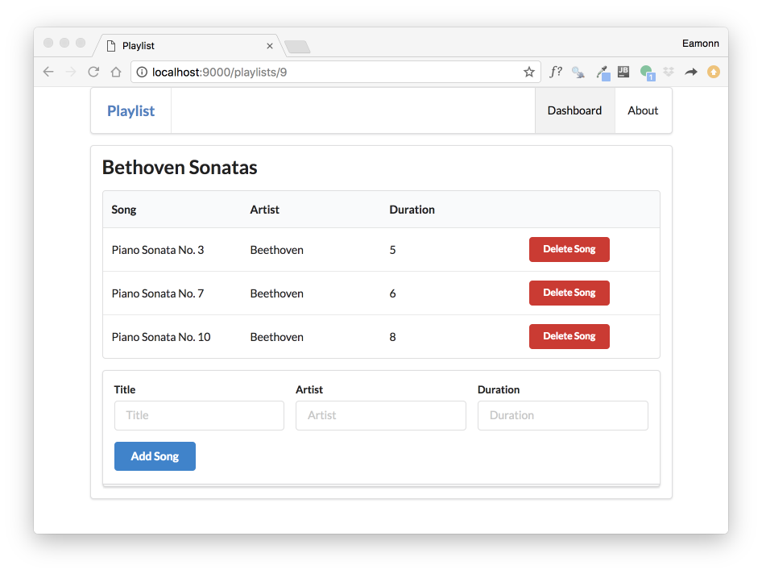

-
Objectives
Review the Playlist Application
-
Setup
In Lab 09b, we extended the original playlist application to support the creation and deletion of playlists + songs.
This is the version as we left it:
Download this archive - unzip it, and make it available for Idea by entering:
play idealizeInside the download folder. Open the project in Idea:

You can run the application from inside IDE via the terminal (as shown above).
Verify the basic operation of the app:

All the buttons should work

-
Review the Static Routes + Controllers
In order to refresh our understanding of how the application works, start by looking at the routes file:
conf/routes
GET / Start.index GET /dashboard Dashboard.index GET /dashboard/deleteplaylist/{id} Dashboard.deletePlaylist POST /dasghboard/addplaylist Dashboard.addPlaylist GET /playlists/{id} PlaylistCtrl.index GET /playlists/{id}/deletesong/{songid} PlaylistCtrl.deleteSong POST /playlists/{id}/addsong PlaylistCtrl.addSong GET /about About.index GET /admin Admin.indexEach of these represents a link that the application can serve. These links are in the various views our application presents.
Landing Page
This is the route for the entire application
GET / Start.indexit will render the start page:

This is the controller method:
app/controllers/start.java
public static void index() { Logger.info("Rendering Start"); render ("start.html"); }... and this is the start view:
views/start.html
#{extends 'main.html' /} #{set title:'Start' /} #{menu id:"start"/} <section class="ui center aligned middle aligned segment"> <h1 class="ui header"> Welcome to Playlist 1 </h1> <p> A small app to let you compose playlists. This app will allow you to create, manage and share your playlists. Simple enter the playlist details one the dashboard. </p> </section>Rendering as :
Exercise
Carry our the above inspection for the following routes:
GET /dashboard Dashboard.index GET /about About.index GET /admin Admin.indexI.e. Examine the controller + the associated view. Perhaps put them into a single text file using sublime so you can look at each controller method + view to get familiar with the lifecycle, response composition and rendered page.
-
Review the Dynamic Routes + Controllers
These routes here are a little different, in that they each contain at least one item in braces:
GET /playlists/{id} PlaylistCtrl.index GET /dashboard/deleteplaylist/{id} Dashboard.deletePlaylist GET /playlists/{id}/deletesong/{songid} PlaylistCtrl.deleteSongTake this one for instance:
GET /playlists/{id} PlaylistCtrl.indexThis is the matching controller method:
public static void index(Long id) { Playlist playlist = Playlist.findById(id); Logger.info ("Playlist id = " + id); render("playlist.html", playlist); }and this is the view:
#{extends 'main.html' /} #{set title:'Playlist' /} #{menu id:"dashboard"/} <section class="ui segment"> <h2 class="ui header"> ${playlist.title} </h2> #{listsongs playlist:playlist /} #{addsong playlist:playlist /} </section>This renders as:

The key aspect to note here is the
{id}is replaced by an actual number (9 in the example). And this number is passed to index asid:public static void index(Long id).. and then used to locate the specific playlist in the model:
Playlist playlist = Playlist.findById(id);This fetched playlist is then passed to the view:
render("playlist.html", playlist);.. and is in turn passed by the view to the
listsongspartial:#{listsongs playlist:playlist /}Listsongs then iterates through the array, displaying each song in turn:
<table class="ui fixed table"> ... #{list items:_playlist.songs, as:'song'} <tr> <td> ${song.title} </td> <td> ${song.artist} </td> <td> ${song.duration} </td> <td> <a href="/playlists/${_playlist.id}/deletesong/${song.id}" class="ui tiny red button">Delete Song</a> </td> </tr> #{/list} ... </table>Sounds complicated! - However this is typical of the lifecycle of requests/response in web applications.
Exercise
Try the above exercise - inspecting the lifecycle of these routes:
GET /dashboard/deleteplaylist/{id} Dashboard.deletePlaylist GET /playlists/{id}/deletesong/{songid} PlaylistCtrl.deleteSongThe last one is particularly interesting - notice there are 2 variables in braces:
{id}and{songid}. Why are both needed? -
Review POST Routes
The final routes of interest are the POST routes:
POST /dasghboard/addplaylist Dashboard.addPlaylist POST /playlists/{id}/addsong PlaylistCtrl.addSongPOST is always used in the context of a from - and the above support forms for creating playlists or songs.
Looking at this one in more detail:
POST /dasghboard/addplaylist Dashboard.addPlaylistThis route is associated with this form:
views/tags/addplaylist.html
<form class="ui stacked segment form" action="/dashboard/addplaylist" method="POST"> <div class="field"> <label>Title</label> <input placeholder="Title" type="text" name="title"> </div> <button class="ui blue submit button">Add Playlist</button> </form>.. and this controller method:
public static void addPlaylist (String title) { Playlist playlist = new Playlist (title, 0); Logger.info ("Adding a new playlist called " + title); playlist.save(); redirect ("/dashboard"); }When the method completes, it just triggers the dashboard route again:
public static void index() { Logger.info("Rendering Admin"); List<Playlist> playlists = Playlist.findAll(); render ("dashboard.html", playlists); }This will display the list of playlists - this time the database query will return one less.
Exercise
Inspect this route in detail:
POST /playlists/{id}/addsong PlaylistCtrl.addSongLocating:
- the view from which it is triggered
- the form that matched the route
- the controller method that is invoked
- the response that is generated
-
Exercises
Exercise 1: Todolist 1
Consider carrying out the same exercise for the TodoList 1 application
Exercise 2: Todolist 2
Consider carrying out the same exercise for the TodoList 2 application - this is the same application but with the addition of Session support.